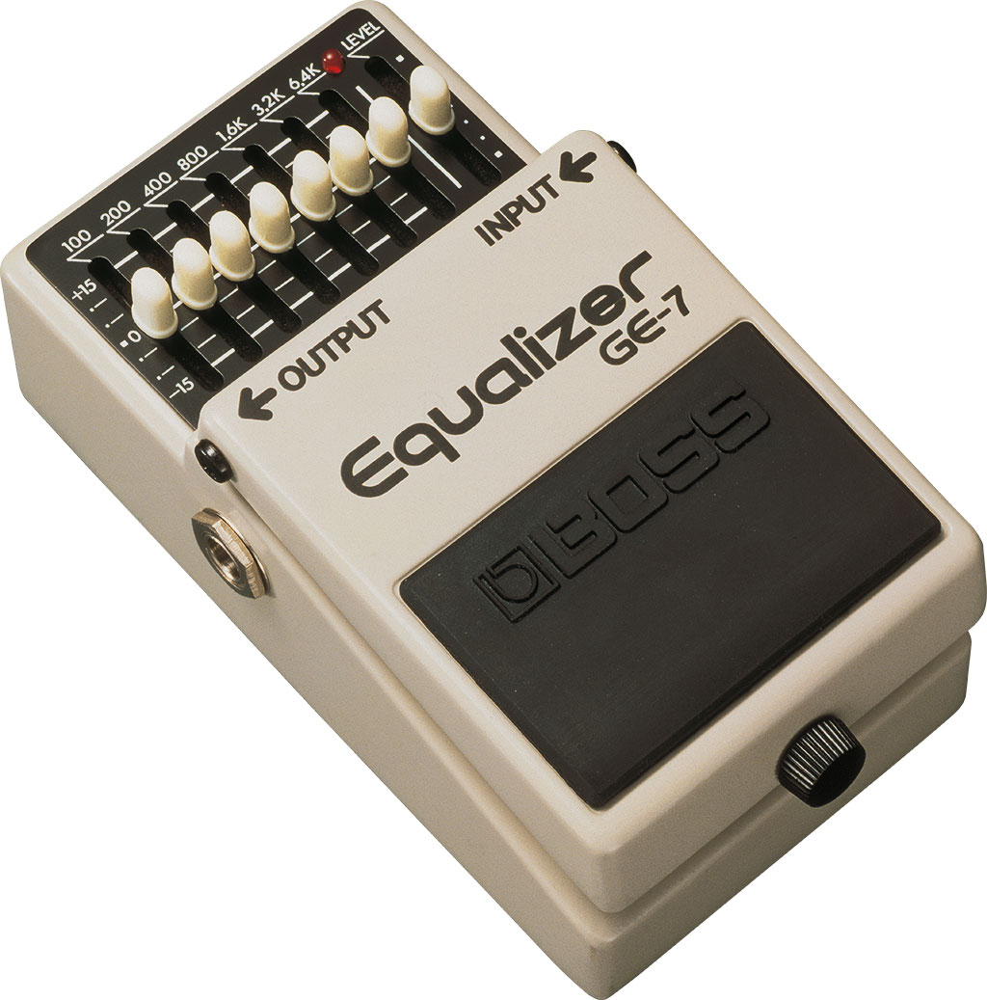
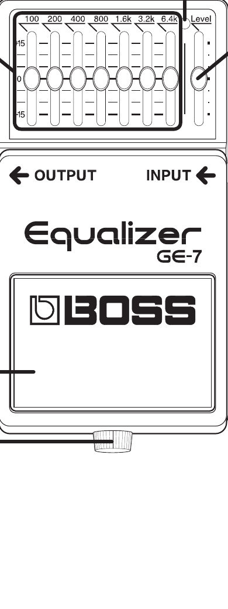
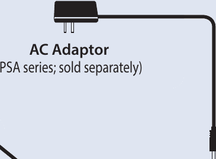
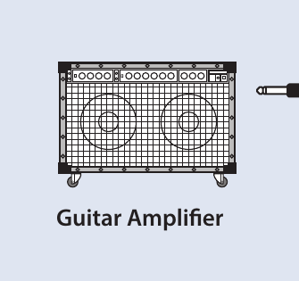
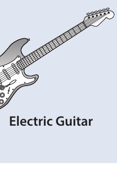
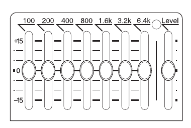
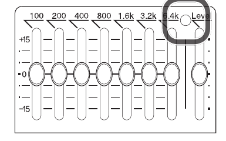
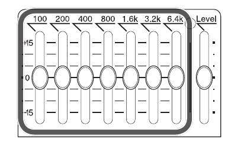
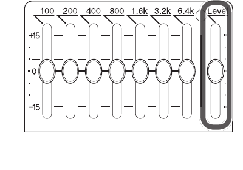
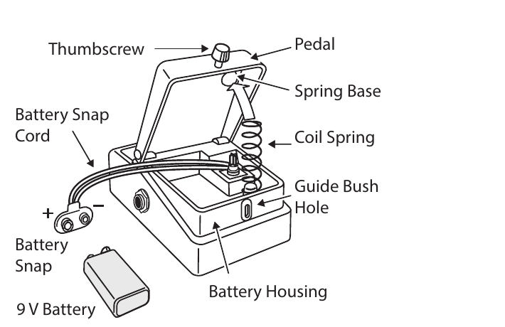

Before using this unit, carefully read the sections entitled “USING THE UNIT SAFELY” and “IMPORTANT NOTES” (supplied on a separate sheet). After reading, keep the document(s) where it will be available for immediate reference.
Main Features
- The Graphic Equalizer GE-7 adjusts the harmonic contents of an instrument or microphone in seven separate bands.
- It covers the frequency spectrum for electric bass, electric guitar, keyboard, mic, etc., to adjust them for room acoustic or to accent a particular tone range.
- Each control adjusts a slightly expanded octave to yield ±15 dB of cut or boost.
- The first three bands adjust the fundamental and the higher four bands adjust the strength of the harmonic accent.
- In addition, level control is very useful for the balance effect sound.
Panel Descriptions

-
DC IN jack
Accepts connection of an AC Adaptor (PSA series; sold separately). By using an AC Adaptor, you can play without being concerned about how much battery power you have left.
We recommend that you keep batteries installed in the unit even though you’ll be powering it with the AC adaptor. That way, you’ll be able to continue a performance even if the cord of the AC adaptor gets accidentally disconnected from the unit.
Use only the specified AC adaptor (PSA-series).
If the AC adaptor is connected while power is on, the power supply is drawn from the AC adaptor.

-
Indicator
This indicator shows whether an effect is ON/OFF, and doubles as the Battery Check indicator. The indicator lights when an effect is ON.
If this indicator goes dim or no longer lights while an effect is ON, the battery is near exhaustion and should be replaced immediately.
-
Graphic equalizer
Control 7 octave bands from 100 Hz to 6.4 kHz by 15 dB up or down.
-
Level slider
The level allows control of GE-7’s output loudness so that it can match or contrast with the straight signal.
-
OUTPUT jack
This jack feeds signal to amplifier.

-
INPUT jack
This jack accepts input signals (coming from a guitar, some other musical instrument, or another effects unit).
The INPUT jack doubles as the power switch. Power to the unit is turned on when you plug into the INPUT jack; the power is turned off when the cable is unplugged. To prevent unnecessary battery consumption, be sure to disconnect the plug from the INPUT jack when not using the effects unit.

-
Pedal Switch
This switch turns the effects ON/OFF.
-
Thumbscrew
When this screw is loosened, the pedal will open, allowing you to change the battery.
For instructions on changing the battery, refer to “Changing the Battery.”
Precautions When Connecting
- To prevent malfunction and equipment failure, always turn down the volume, and turn off all the units before making any connections.
-
Once everything is properly connected, be sure to follow the
procedure below to turn on their power. If you turn on
equipment in the wrong order, you risk causing malfunction
or equipment failure.
- When powering up:
- Turn on the power to your guitar amp last.
- When powering down:
- Turn off the power to your guitar amp first.
- Before turning the unit on/off, always be sure to turn the volume down. Even with the volume turned down, you might hear some sound when switching the unit on/off. However, this is normal and does not indicate a malfunction.
Use of Battery
- A battery was installed in the unit before it left the factory. The life of this battery may be limited, however, since its primary purpose was to enable testing.
- If you handle batteries improperly, you risk explosion and fluid leakage. Make sure that you carefully observe all of the items related to batteries that are listed in “USING THE UNIT SAFELY” and “IMPORTANT NOTES” (supplied on a separate sheet).
- When operating on battery power only, the unit’s indicator will become dim when battery power gets too low. Replace the battery as soon as possible.
- Batteries should always be installed or replaced before connecting any other devices. This way, you can prevent malfunction and damage.
Main Specifications
| Nominal Input Level | -20 dBu |
|---|---|
| Input Impedance | 1 MΩ |
| Nominal Output Level | -20 dBu |
| Output Impedance | 1 kΩ |
| Recommended Load Impedance | 10 kΩ or greater |
| Power Supply |
Carbon-zinc battery (9 V, 6F22) or Alkaline battery (9 V, 6LR61) AC adaptor (PSA series; sold separately) |
| Current Draw | 30 mA Expected battery life under continuous use: Carbon: 9 hours · Alkaline: 19.5 hours. These figures will vary depending on the actual conditions of use. |
| Dimensions | 73 (W) x 129 (D) x 59 (H) mm 2-7/8 (W) x 5-1/8 (D) x 2-3/8 (H) inches |
| Weight | 400 g / 15 oz (including battery) |
| Accessories |
Leaflet (“USING THE UNIT SAFELY,”
“IMPORTANT NOTES,” and
“Information”) Carbon-zinc battery (9 V, 6F22) |
| Options (sold separately) | AC adaptor (PSA-series) |
0 dBu = 0.775 Vrms
This document explains the specifications of the product at the time that the document was issued. For the latest information, refer to the Roland website.
Operating the Unit
-
After connecting all cords required, set all knobs on the
panel as illustrated.

-
Depress the pedal switch. CHECK LED lights to indicate
“EFFECT ON” and extinguishes to indicate
“EFFECT OFF.”
This CHECK LED is also used to check battery. If LED fails to light or becomes dim, the battery should be replaced.

-
Set Graphic Equalizer sliders to proper position.

-
While switching pedal ON and OFF, set Level slider to proper
position so no volume difference between Normal and Effect
modes is noticed.

Changing the Battery

-
Hold down the pedal and loosen the thumbscrew, then open the
pedal upward.
The pedal can be opened without detaching the thumbscrew completely.
- Remove the old battery from the battery housing, and remove the snap cord connected to it.
-
Connect the snap cord to the new battery, and place the
battery inside the battery housing.
Be sure to carefully observe the battery’s polarity (+ versus -).
-
Slip the coil spring onto the spring base on the back of the
pedal, and then close the pedal.
Carefully avoid getting the snap cord caught in the pedal, coil spring, and battery housing.
- Finally, insert the thumbscrew into the guide bush hole and fasten it securely.